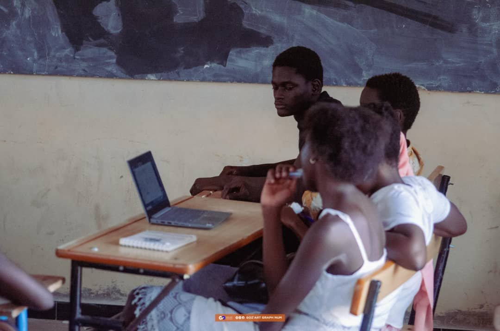
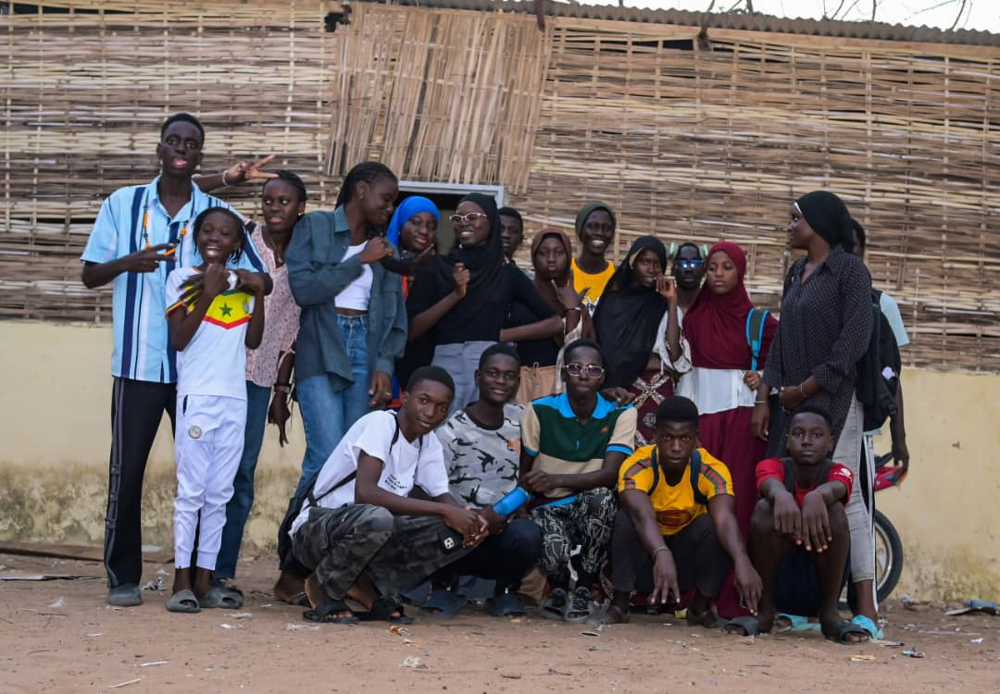
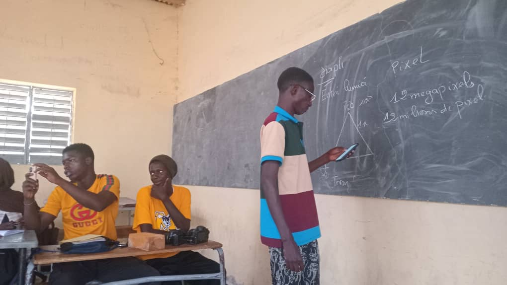
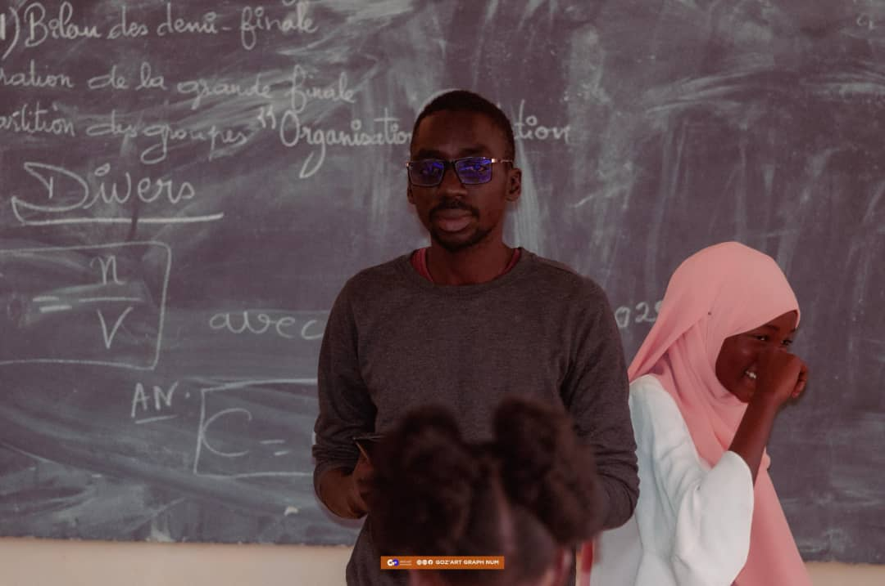

Atelier
Travail de groupe du Club TIC
Les membres du Club TIC participent à des séances de travail collaboratif afin de renforcer l’esprit d’équipe et l’apprentissage pratique des outils numériques.
Nos activités, formations et moments forts

Les membres du Club TIC participent à des séances de travail collaboratif afin de renforcer l’esprit d’équipe et l’apprentissage pratique des outils numériques.

Des formations régulières sont organisées pour initier les élèves à l’informatique, à la communication numérique et aux nouvelles technologies.

Les élèves mettent en pratique leurs connaissances à travers des cours interactifs, favorisant l’autonomie et la compréhension des concepts numériques.

Le Club TIC bénéficie d’un encadrement pédagogique visant à guider les élèves dans leur apprentissage et leurs projets numériques.